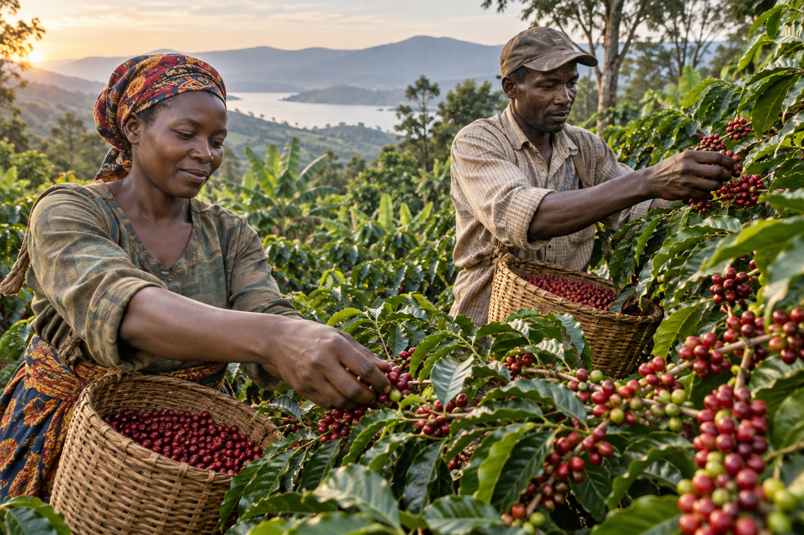
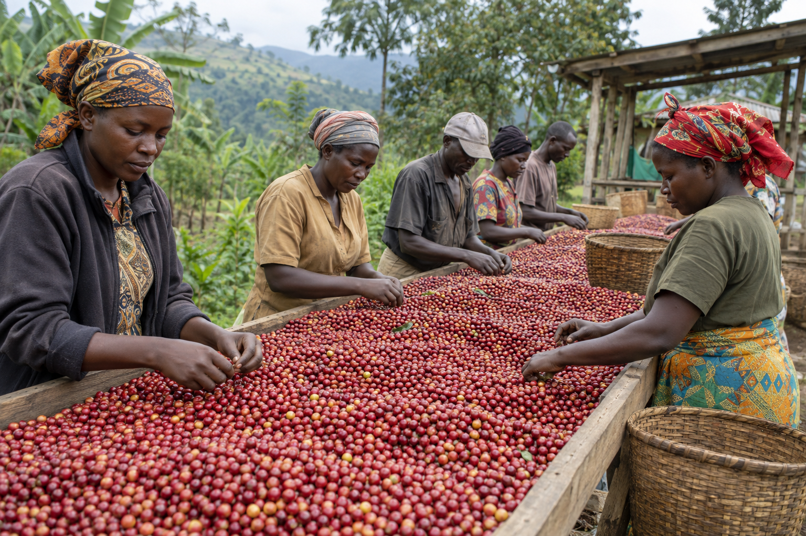

Engage
Build direct, respectful relationships across producing communities.
About Kioji
Kioji Investments Ltd is a Kampala-based enterprise focused on sourcing Ugandan coffee, strengthening farmer relationships, supporting value addition and participating in green coffee trade.

Who we are
Our work begins with the people and places behind Ugandan coffee. We connect the practical realities of sourcing at origin with the handling and communication expected in commercial coffee trade.
We are building a company that values dependable relationships, careful preparation and a clear understanding of the coffee journey—from farm and collection to value addition and market.
Our role
Kioji works where relationships, quality handling and commerce meet.
Build direct, respectful relationships across producing communities.
Bring together Ugandan Robusta and Arabica for commercial opportunities.
Encourage care in sorting, movement and storage.
Support preparation that makes coffee ready for its next market stage.
Connect Uganda’s coffee supply with buyer enquiries.

Careful sorting at origin
For Kioji, responsible sourcing means learning how coffee is produced, maintaining honest communication and recognising that lasting trade depends on the people who make it possible.
Our farmer relationships